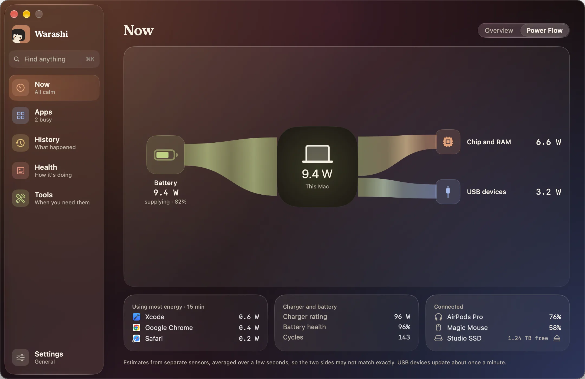

O Fluxo de Energia é a segunda aba de Agora. Ele mostra de onde vem e para onde vai a energia do seu Mac, neste momento.
- Abra
Escolha Agora e a aba Fluxo de Energia, pressione o bloco Potência na Visão Geral ou pressione Potência na janela da barra de menus. Você também pode adicionar uma versão pequena do Fluxo de Energia à janela da barra de menus.


- Leia da esquerda para a direita
A energia começa no Carregador ou na Bateria, passa por Este Mac e termina em Chip e RAM, Dispositivos USB e Todo o resto, como a tela e o Wi-Fi. Um canal mais grosso carrega mais.
- Enquanto carrega
O canal do carregador se divide: um ramo vai direto para a Bateria e o outro para Este Mac. Assim, o número em Este Mac é só o que o próprio Mac está usando.
- Concentre-se em um caminho
Aponte para uma origem ou destino para esmaecer os outros.
O que você vai ver
| A linha no topo diz | O que está acontecendo |
|---|---|
| Funcionando com o carregador. A bateria está mantida | O carregador alimenta o Mac, e a bateria não está carregando nem descarregando, por exemplo no seu limite de carga. |
| O carregador está alimentando este Mac e enchendo a bateria | Os dois, com um ramo separado para a bateria. |
| Funcionando com a bateria | A bateria é a única fonte. |
| O carregador não dá conta | A bateria está somando ao que o carregador fornece. |
Abaixo do diagrama: os apps que mais usaram energia nos últimos 15 minutos, os detalhes do carregador e da bateria e o que está conectado.
Se algo não estiver certo
- Não há aba Fluxo de Energia: ela precisa de uma leitura da bateria e do carregador, então não é oferecida em Macs de mesa.
- A luz parou de se mover: ela fica parada com Reduzir Movimento, no Modo de Baixo Consumo ou com Ajustes › Geral › Movimento animado desativado.
Mais em Solução de problemas, ou escreva para adam@warashi.app.